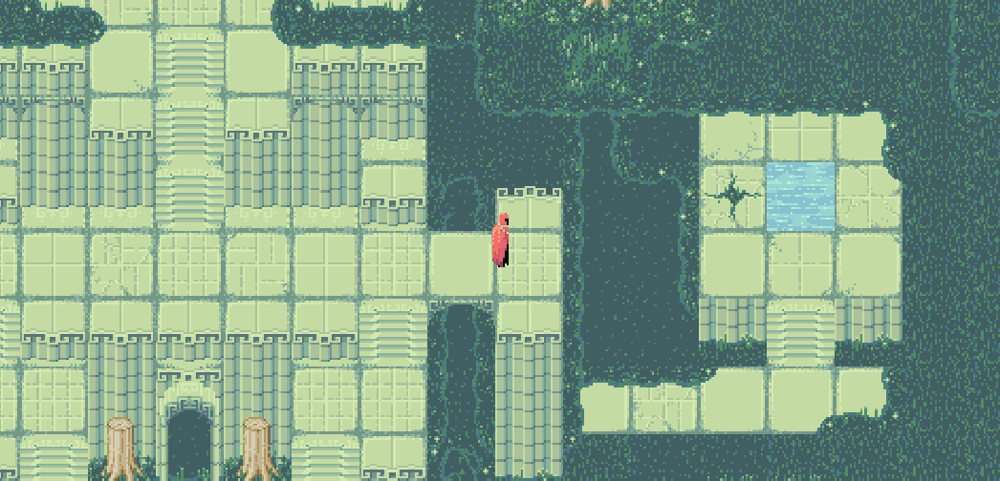
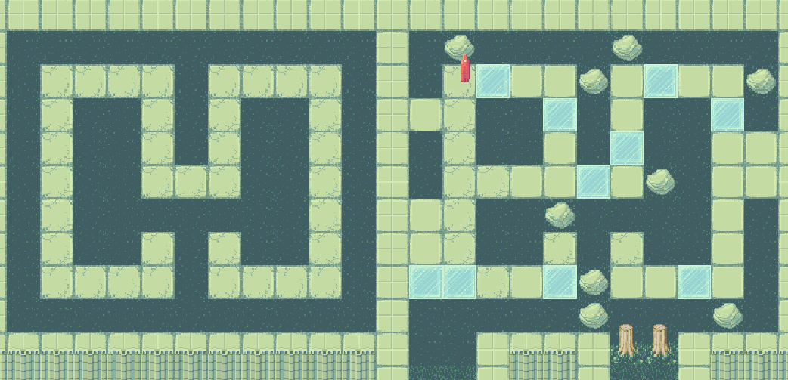
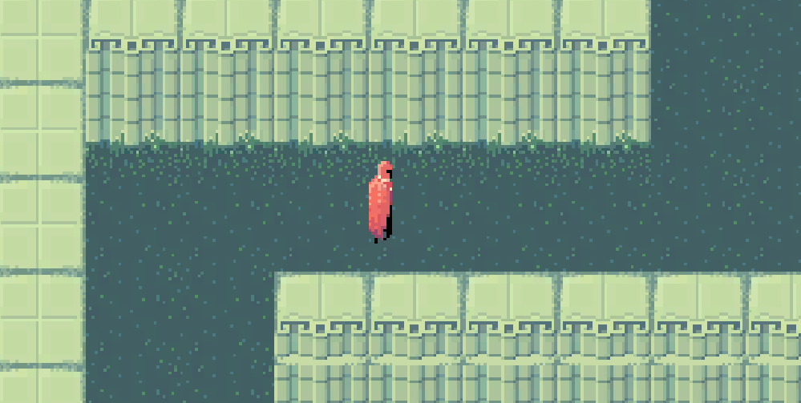
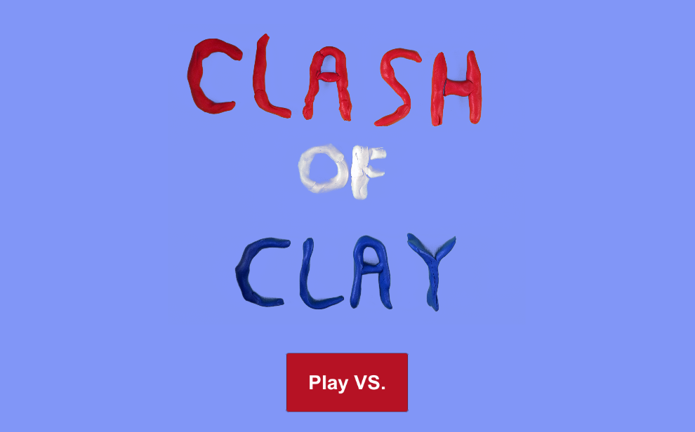
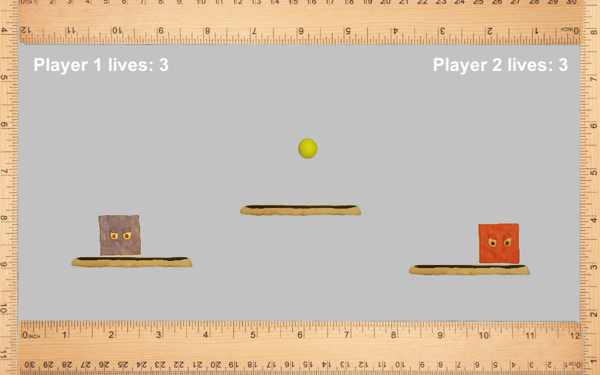
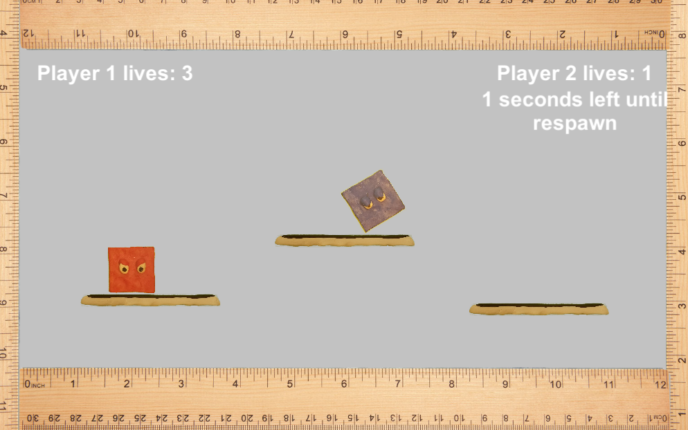
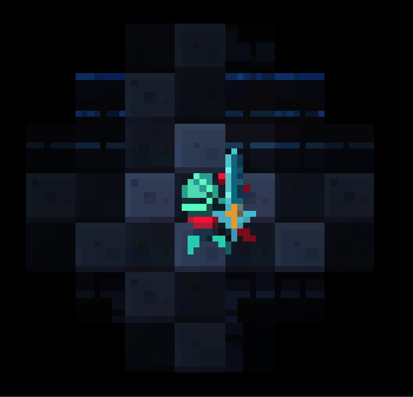
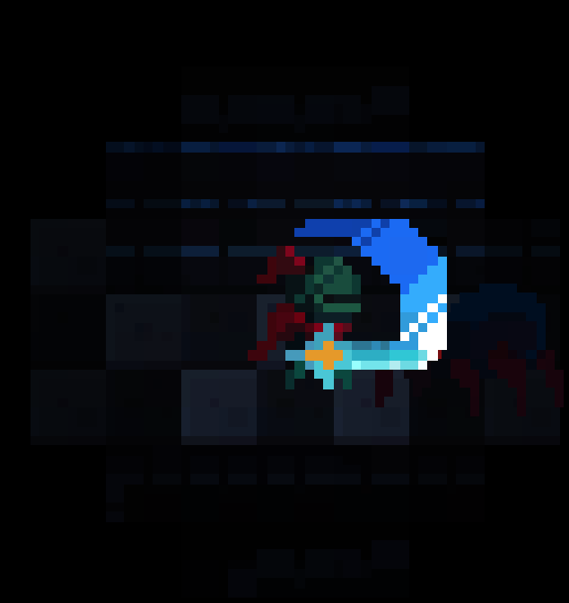

Escape The Shrine - Link
Escape The Shrine is a small puzzle adventure game I programmed/designed in Unity for a game jam. The task was to create a game based on one of eight songs. Our chosen song is featured in the game, and influenced the chosen art direction.



Clash of Clay - Link
Clash of Clay is another Unity game I created for a game jam. The programming, design, and all assets for the game were done by me. The music was made by a friend of mine. This jam's theme was sports, so I decided to design a simple dodge-ball game. I became interested in exploring alternative art styles, and made my best attempt at using clay assets in the game. Unfortunately, green-screening and properly lighting clay assets proved more difficult than I anticipated. This resulted in colors being a little washed, and characters' designs being simple. I would, however, like to explore this art style again using the proper equipment.



Light Up, Knight - Link
Originally created for Low Rez Jam 2018, Light Up, Knight is a horror game that focuses on using in game lighting to communicate with the player. The light around the main character represents health, and allows the player to light up the dark maze they must navigate.
All programming was done by me. Key features of this game include enemy AI and a tilebased lighting system.
This game is still under development, but updates can be found here.


